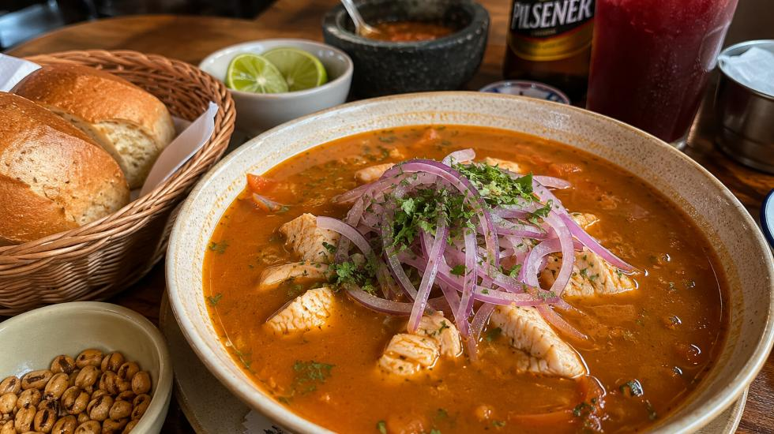
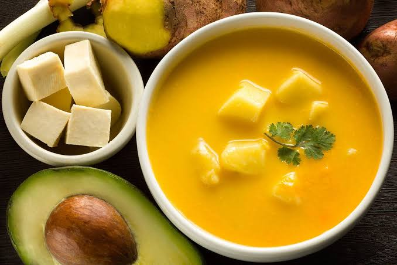
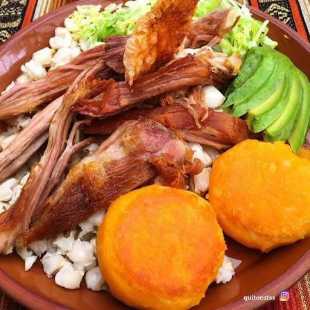
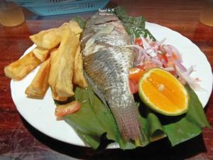
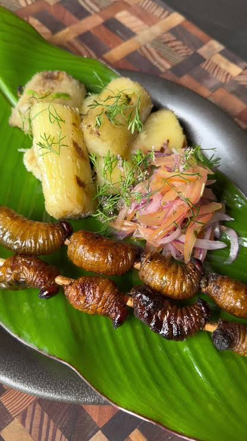

El Tigrillo (Costa)
Plato tradicional a base de plátano verde majado con queso y chicharrón.
Ingredientes:
- 3 plátanos verdes pelados y cortados
- 150g de queso fresco rallado
- 100g de chicharrón picado
- 2 huevos
- 1 cucharada de mantequilla y sal al gusto
Preparación:
- Cocer o freír los trozos de verde hasta que estén suaves.
- Majar el verde en un tazón o mortero aún caliente.
- En una sartén, derretir la mantequilla, añadir el verde majado, el queso y el chicharrón.
- Agregar los huevos batidos, mezclar bien hasta cocinar y servir caliente.

Encebollado de Pescado (Costa)
Emblemático caldo de albacora con yuca y cebolla curtida.
Ingredientes:
- 500g de albacora fresca
- 500g de yuca cocida y troceada
- 1 cebolla morada en pluma (curtida)
- Ají, comino, cilantro y limón
Preparación:
- Hervir el agua con aliños y cocinar la albacora; retirar el pescado y desmenuzar.
- En el mismo caldo, cocinar la yuca hasta que esté suave.
- Servir el caldo caliente con la yuca, trozos de pescado y abundante cebolla curtida encima.

Locro de Papas (Sierra)
Cremosa sopa andina acompañada de queso fresco y aguacate.
Ingredientes:
- 1 kg de papas peladas y picadas
- 1 taza de leche
- 150g de queso fresco picado
- Refrito de cebolla blanca, achiote y sal
- Aguacate para acompañar
Preparación:
- Hacer un refrito con la cebolla blanca, achiote y mantequilla.
- Agregar las papas y sofreír unos minutos; añadir agua hirviendo y cocinar hasta que la papa se deshaga.
- Agregar la leche y el queso fresco, rectificar la sal y servir con rodajas de aguacate.

Hornado Tradicional (Sierra)
Jugoso cerdo horneado lentamente servido con tortillas de papa y agrio.
Ingredientes:
- 2 kg de pierna de cerdo con cuero
- Aliño tradicional (ajo, cerveza, comino y sal)
- 500g de tortillas de papa (llapingachos)
- Mote cocido, lechuga y agrio
Preparación:
- Marinar el cerdo con el aliño durante al menos 12 horas.
- Hornear a fuego lento (160°C) durante 3 a 4 horas bañado en sus jugos hasta tostar el cuero.
- Servir la carne desmenuzada acompañada de mote, llapingachos y abundante agrio.

Maito de Pescado (Amazonía)
Pescado envuelto en hojas de bijao y asado a las brasas.
Ingredientes:
- 4 filetes de pescado (tilapia o cachama)
- Hojas de bijao o plátano
- Ajo, sal y comino al gusto
- Yuca cocida para acompañar
Preparación:
- Sazonar el pescado con ajo y sal.
- Envolver el pescado cuidadosamente en hojas de bijao y amarrar con tiras de la misma hoja.
- Asar a la parrilla sobre brasas de carbón durante 20 a 25 minutos.

Chontacuro Asado (Amazonía)
Platillo autóctono preparado a las brasas con gran valor nutritivo.
Ingredientes:
- 12 chontacuros frescos (larvas)
- Pinchos de madera o bambú
- Sal al gusto
- Yuca asada para acompañar
Preparación:
- Lavar bien los chontacuros y colocarlos en los pinchos de madera.
- Asar sobre brasas directas durante 5 a 10 minutos hasta dorar la piel.
- Agregar una pizca de sal y servir junto con yuca asada.

Ceviche de Canchalagua (Galápagos)
Platillo insular fresco marinado con cítricos y cebolla.
Ingredientes:
- 300g de canchalagua fresca limpia
- Jugo de 6 limones frescos
- 1 cebolla morada picada en pluma
- Tomate picado, cilantro y sal
Preparación:
- Golpear ligeramente la canchalagua para suavizarla y cortarla en trozos.
- Marinar el molusco en el jugo de limón durante unos minutos.
- Mezclar con la cebolla curtida, tomate, cilantro y sazonar con sal al gusto.

Arroz Marinero con Langosta (Galápagos)
Exquisito arroz salteado con mariscos frescos y langosta insular.
Ingredientes:
- 2 colas de langosta frescas en trozos
- 3 tazas de arroz cocido
- Camarones, calamares y conchas
- Refrito con achiote, cebolla, pimiento y vino blanco
Preparación:
- Saltear la langosta y los demás mariscos en mantequilla con ajo.
- Preparar un refrito jugoso con achiote y verduras; desglasar con vino blanco.
- Mezclar el arroz cocido con el refrito y los mariscos antes de servir.